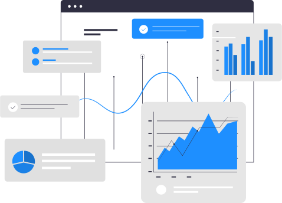

Focus in MES
We help you and improve your MES management.
What is an MES system?
What is an MES system? The definition of a MES system (Manufacturing Execution System) is that of a software that acts as a control and monitoring system of information for the management of production processes in industrial environments.

Its core functions are to connect, monitor, and control complex manufacturing systems and track production data in real time.
The main objective of an MES is to ensure the effective execution of the manufacturing operations of the production plant, to optimize the production performance and to improve the quality of the final product.
Our part
We study, analyze and detect problems in your MES software.
In this way, we prepare a specific solution for each problem that
comes our way, delivering a proposal to deal with each of them.
We create new dynamic reports of all kinds,
we simplify your
production data to focus only on what is important
We created new mobile applications,
keep track of KPIs in
real time to follow your production anywhere
Not only that...
We also provide support for your MES software and our applications
so you don't have to worry about anything.
Success stories
For more than 10 years trusting in our service. We create desktop mobile applications, reports for each of your needs. our greatest pride...iODS. a centralized data cube of kpi for quick monitoring and statistics.
We help with the creation and optimization of new applications for companies.
We provide 365 support on your MES application and other company software
About Us
"I founded Arido Software in 2007, after been working several years by my own in the MES Area for the world greatest manufacturing goods company supporting and implementing GE Proficy Plant Applications, Proficy iHistorian and Profcy Real Time Information Portal. Developing and transferring skills to a small team in the beginnings was very challenging but that makes the foundation of our company today, where high skills and a deep understanding of what is needed in the plant floor makes the difference." Fernando Rio - Arido Software President
 @aridosoftware
@aridosoftware
 @aridosoftware
@aridosoftware